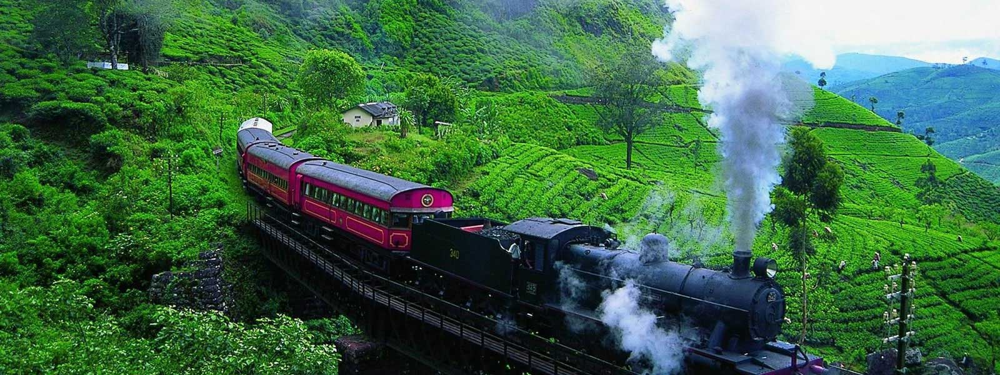

BEST TOURIST ATTRACTIONS IN SRI LANKA
Nestled in Asia and a land that promises a majestic holiday experience, Sri Lanka is an island nation that has so much to offer. From stirring mountains and sandy beaches to lush green gardens and monuments, there are many
places to visit in Sri Lanka that inspire you.
Endless beaches, timeless ruins, welcoming people, oodles of elephants, rolling surf, cheap prices, fun trains, famous tea and flavorful food make Sri Lanka irresistible.
The Undiscovered Country
You might say Sri Lanka has been hiding in plain sight. Scores of travelers have passed overhead on their way to someplace else, but years of uncertainty kept Sri Lanka off many itineraries.
Now, however, all that has changed. The country is moving forward quickly as more and more people discover its myriad charms. Lying between the more trodden parts of India and Southeast Asia, Sri Lanka's history, culture and natural beauty are
undeniably alluring. It's the place you haven't been to yet, that you should.
So Much in So Little
Few places have as many Unesco World Heritage Sites (eight) packed into such a small area. Sri Lanka's 2000-plus years of culture can be discovered at ancient sites where legendary temples boast beautiful details even as they shelter in caves
or perch on prominent peaks. More recent are colonial fortresses, from Galle to Trincomalee.
Across the island, that thing that goes bump in the night might be an elephant heading to a favorite waterhole. Safari tours of Sri Lanka’s pleasantly relaxed national parks encounter leopards, water buffaloes, all manner of birds and a passel
of primates.
It’s So Easy
Distances are short: see the sacred home of the world’s oldest living human-planted tree in the morning (Anuradhapura) and stand awestruck by the sight of hundreds of elephants gathering in the afternoon (Minneriya). Discover a favourite beach,
meditate in a 2000-year-old temple, exchange smiles while strolling a mellow village, marvel at birds and wildflowers, try to keep count of the little dishes that come with your rice and curry. Wander past colonial architecture in Colombo,
then hit some epic surf.
Sri Lanka is spectacular, affordable and still often uncrowded. Now is the best time to discover it.
Rainforests & Beaches
When you’re ready to escape the tropical climate of the coast and lowlands, head for the hills, with their temperate, achingly green charms. Verdant tea plantations and rainforested peaks beckon walkers, trekkers and those who just want to see
them from a spectacular train ride.
And then there are the beaches. Dazzlingly white and often untrodden, they ring the island so that no matter where you go, you’ll be near a sandy gem. Should you beat the inevitable languor, you can surf and dive world-class sites without world-class
crowds. And you're always just a short hop from something utterly new.
